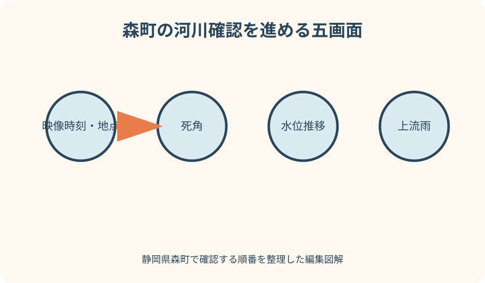
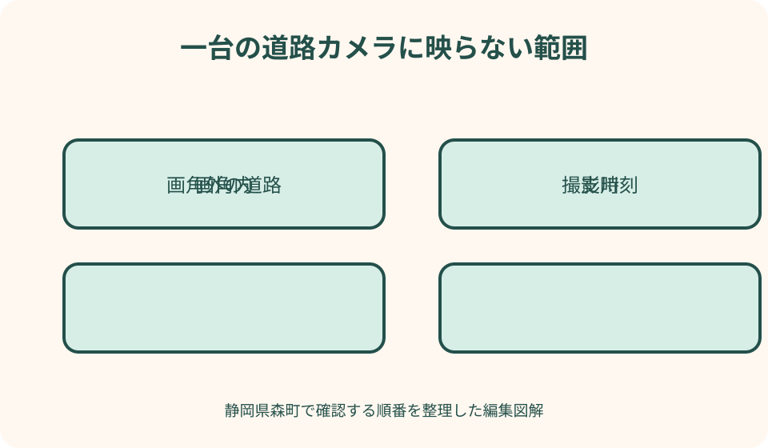

防災・河川水位・ライブカメラ｜最終確認 2026-08-10
静岡県森町のライブカメラ・河川水位の確認順｜太田川・雨・道路を読む
ライブカメラは現地の一方向を切り取った観測画像です。画面が穏やかに見えても、撮影が古い、別地点、暗闇、雨滴や霧、画角外の通行止めという可能性があります。森町では、映像の時刻と地点を確認した後、太田川の観測所水位、上流の雨、町の避難情報、県の道路規制へ進む順序が重要です。

ライブカメラは判断の一材料に限定する
国土交通省の川の防災情報、静岡県のサイポスレーダーなどには、雨量、水位、カメラ等を地図から探せる機能があります。まず運営者が国・県・町のどれかを確認します。
ライブという名称でも、常時動画とは限りません。一定間隔の静止画、過去画像、通信停止時の最後の画像が表示される場合があります。
画面に川面が収まっていても、堤防の反対側、支流、橋の取付部、道路の冠水、斜面は画角外です。見えない場所がある前提で使います。
晴れて見える画像が、現在地から離れた観測地点の場合もあります。カメラ名だけでなく、水系、河川名、所在地、地図上の座標を確認します。
画像を保存して家族へ送る場合は、出典URL、地点、表示時刻、確認した時刻を添えます。画像だけを転載して現在の状態として拡散しません。
最初に映像時刻と更新状態を見る
画面を開いたら、撮影時刻、更新時刻、現在時刻を見比べます。数分の差でも強雨時には状況が動くため、時刻表示がない画像は現在確認に使いません。
自動更新の表示があっても、ブラウザが古い画像を保持する場合があります。公式画面の更新操作を使い、端末のスクリーンショットだけを見続けません。
時刻が止まっている、画像が黒い、記号が欠測、メンテナンス中の場合は『変化なし』ではなく『観測できない』と読みます。
夜間の暗さ、逆光、雨滴、霧、蜘蛛の巣、泥汚れは視認を妨げます。水面が見えないのに水位が低いとは判断しません。
過去画像を比較できる場合も、同じ撮影間隔かを確認します。途中の急変が写っていない可能性を残し、数枚の見た目だけで傾向を決めません。
地点名・川の向き・死角を地図で確認
観測所名が地区名や橋名の場合、同じ名称が道路・集落・河川に使われることがあります。公式地図のピンを開き、太田川本川か支川かを確認します。
上流・下流の向きは画面の左右と一致するとは限りません。地図の流路とカメラ説明を見て、雨がどこから集まる地点かを把握します。
森町公式の自然解説には太田川水系と複数の支川が示されています。『森町の川』を太田川一地点だけで代表させません。
カメラの真下、橋脚の裏、堤内地、側溝、低い道路は映像に入らない場合があります。旅行経路が画角外なら道路情報を別に確認します。
別の県や同名河川を開いていないか、所在地に静岡県周智郡森町があるかを見ます。検索結果の『太田川』という語だけでは足りません。
太田川の水位は観測所ごとに読む
森町の防災資料には、太田川水系の複数の水位観測所が掲載されています。まず自宅・旅行先・経路と、どの観測所が地理的に関係するかを地図で確認します。
水位の数値は、各観測所の基準面から測った値です。上流と下流の数値を単純に比べ、数字が大きい方が危険だとは判断しません。
観測所ごとに水防団待機、氾濫注意、避難判断などの基準が設定される場合があります。現在の公式画面が示す凡例と発表情報を読みます。
一回の値より時間変化を見ます。上昇、横ばい、下降の表示があっても、欠測や上流雨を確認し、下降した一瞬で警戒を解きません。
川の防災情報に『最新値なし』や負荷集中の表示が出た場合、水位がないことにはなりません。町の避難情報、県のサイポス、気象情報へ切り替えます。

上流雨と水位の時間差を確認する
森町は南北に長く、太田川水系は山間部から水を集めます。自分のいる町なかで雨が弱くても、上流域の雨量を別に見ます。
サイポスレーダーや気象庁の雨量情報では、現在だけでなく直前までの降り方を確認します。短時間の強雨と長時間の累積は別々に記録します。
上流雨の後、水位変化が現れるまでの時間を旅行者が固定的に推定しません。地形、支川、ダム、降雨分布で変わるため、公的情報の更新を待ちます。
雨雲が通過した画像を見て川辺へ戻らず、警報、洪水危険度、水位推移、町の案内がどうなっているかを確認します。
太田川ダムなど上流施設の情報が表示される場合も、放流や水位の数字を自己流で安全判定へ変換しません。管理者と町の発表を優先します。
映像・水位・警報・町情報の四画面を並べる
第一画面はカメラです。地点と時刻が一致し、目視可能な範囲だけを記録します。見えない部分は空欄のままにします。
第二画面は水位グラフです。観測所名、最新時刻、欠測、基準の凡例を確認し、スクリーンショットの数値だけを独立させません。
第三画面は雨・警報・洪水危険度です。森町と上流域の現在・直前・予測を見ます。異なる時刻の画面を同時刻の状態として並べません。
第四画面は森町の避難・防災発信です。公式LINE、防災メール、町サイト、同報などで対象地区と発表時刻を確認します。
四画面が矛盾するように見えたら、自分に都合のよい一つを採用しません。最も新しい公的な避難・通行指示を優先し、迷えば移動を中止します。
道路は管理者ごとに確認する
静岡県道路通行規制情報提供システムは県管理道路の規制確認に使えますが、すべての町道や高速道路を同じ範囲で扱うわけではない旨が示されています。
町道・林道は森町公式、高速道路はNEXCO、県道は静岡県、国道は国の管理者情報というように、自分の経路を道路管理者へ分けます。
森町公式には林道の通行規制を地点図付きで案内するページがあります。掲載時点を見て、解除・追加がないか出発直前に確認します。
道路カメラが乾いて見えても、そこから先の倒木、崩落、冠水、工事、交通事故は映らない可能性があります。規制一覧を必ず併用します。
地図アプリの渋滞色や迂回提案は、公式な通行可否を保証しません。細い町道・林道へ案内されたら進まず、管理者情報へ戻ります。
画像だけで旅行可否を決めない
観光地近くのカメラが明るく見えても、自宅からの経路、橋、鉄道、バスが同じ状態とは限りません。旅程全体を確認します。
施設が営業中でも、警報や道路規制がある場合は訪問を延期します。営業情報は敷地の受入であり、移動の安全確認ではありません。
川遊び、釣り、キャンプ、花火、河川敷散策は、水位が基準未満に見えることを実施許可にしません。施設・主催者・河川管理者の中止情報を確認します。
旅行中止の基準を『カメラで濁流が見えたら』にすると判断が遅れます。警報級の可能性、運休、通行止め、町の避難情報が出た段階で中止を検討します。
既に森町へいる場合は、新しい観光地へ移動せず、宿や施設の管理者と町の案内を確認します。本記事を根拠に独自の避難経路を作りません。
現地確認のため川や道路へ近づかない
カメラの画質が悪いからと、橋や河川敷へ水位を見に行きません。暗さ、風雨、路面、増水で近づく行為自体が負担になります。
自家用車で通行止め地点の手前まで確認しに行くと、転回、緊急車両、復旧作業を妨げます。規制情報と現地係員の指示で判断します。
水位標や橋脚を肉眼で見ても、公式観測所の基準と同じとは限りません。目測写真をSNSへ『現在の水位』として投稿しません。
道路上の水たまりが浅く見えても、深さ、流れ、路面の損傷は画面から分かりません。車種や経験を理由に進入しません。
住民が通っている映像や投稿も、自分の車と経路が通行可能という許可ではありません。管理者の規制を確認できなければ移動しない選択を取ります。
避難情報はライブ映像より優先する
町から避難に関する情報が出た場合、カメラが平穏に見えることを理由に無視しません。対象地区、発表時刻、求められる行動を公式本文で確認します。
指定避難所の一覧に施設名があっても、現在開設中とは限りません。町が発表する開設場所と災害種別を確認します。
映像が止まった直後に避難情報が出ることもあり得ます。通信断は安全の証拠ではなく、観測の空白として扱います。
旅行者は土地勘で独自判断せず、宿、観光施設、駅、警察・消防など現地の公的案内へ従います。遠い避難所へ車で移動することが常に適切とは限りません。
避難情報の対象外に見えても、帰宅経路が対象区域を通る場合があります。今すぐ帰るより、管理者の指示を確認し移動開始を保留します。
通信切れとサイト混雑への代案
川の防災情報はアクセス集中で検索しにくい場合があります。一つのサイトだけを開き続けず、静岡県サイポス、森町公式、気象庁等の公式入口を平時に保存します。
必要地点の観測所名、河川名、道路名、住所を紙へ書きます。通信が戻ったとき検索語を迷わず、別県の同名地点を避けられます。
最新画像を端末へ保存しても、それ以後の変化は分かりません。オフライン画像には取得時刻を書き、現在確認には使わない印を付けます。
ラジオ、同報無線、施設放送、道路情報板など、インターネット以外の公的情報にも注意します。伝聞は発信元と時刻を確認します。
家族とは連絡不能時の原則を決めます。全員が川を越えて集合するのではなく、各自が現在地の公的案内を優先することを共有します。

平時に作る三地点の確認セット
自宅、よく行く観光地、主要な帰宅経路の三つについて、近い河川観測所と道路管理者を調べます。地点名だけでなく公式URLを保存します。
カメラがない地点もあります。映像が見つからないことを情報不足と認識し、水位、雨量、規制、町情報で補います。非公式カメラを代用しません。
観測所の位置をハザードマップへ書き込みます。ただし観測点の値が色の範囲を直接決めるとは解釈せず、別資料として並べます。
家族カードには確認順、サイト名、観測所名、町の防災配信、旅行中止の原則を書きます。固定の水位値だけを合図にしません。
季節の変わり目、道路工事、サイト更新、引越しの際にリンクを開き直します。ブックマークが古いページや終了サービスへ向いていないか確認します。
車で訪れる予定なら、出発地から目的地までを一本の線として見ず、太田川を渡る地点、山側へ入る地点、引き返せる広い道路を平時に地図へ印しておきます。災害時に初めて細い抜け道を探す計画は立てません。
同行者にはカメラ映像そのものだけを送らず、『どの観測地点を何時に確認し、町の発表と道路規制をどこで照合したか』を短く共有します。同じ画面を見ても判断基準が違うという事故を減らせます。
良い点
森町公式の防災情報から、ハザードマップ、気象、洪水危険度、河川情報へ進めます。町の発信を基点に国・県の観測へ広げられます。
国の川の防災情報は、水位、雨量、カメラを地図上で地点ごとに探せます。所在地と水系を確認すれば、同名河川の混同を減らせます。
静岡県サイポスは県・国の水位計情報を一定間隔で表示し、河川・防災・気象情報を一つの入口で確認できます。
県道路、町の林道、国道、高速道路を管理者別に確認することで、一つのカメラに依存せず旅行経路全体を見られます。
注文したい点
森町公式に、町内の主要カメラ・水位観測所・雨量・道路規制を観光地と地区名から選べる一覧があると、初訪問者も地点を間違えにくくなります。
各カメラ画面には、撮影方向、上流・下流、画角外の支川、更新間隔、欠測中の表示を一目で分かる形で示してほしいです。
水位グラフは基準面、観測所固有の基準、最新取得、欠測をスマートフォンでも常時表示すると、数値だけの誤読を減らせます。
道路規制システム間で、県道、町道、林道、国道、高速道路の対象範囲と次の確認先を相互リンクしてほしいところです。
アクセス集中時の代替URL、テキスト版、低帯域表示が公式ページに明示されれば、画像が開けない状況でも発表内容を確認できます。
代案・結論
カメラが止まっていれば、現地へ見に行くのではなく水位、上流雨、警報、町情報、道路規制へ切り替えます。情報不足は出発を後押しする材料ではありません。
水位が横ばいでも上流雨や警報が続くなら、旅行や河川利用を再開しません。施設・主催者・町の更新を待ちます。
道路画像が良好でも規制一覧に通行止めがあれば規制を優先します。迂回路が山道や川沿いなら、独自に選ばず旅行を延期します。
結論は、映像の時刻・地点・死角、水位推移、上流雨、町の避難情報、道路管理者の規制を順に確認し、一項目でも欠けたら移動を小さくすることです。
大石の視点
ライブカメラは説得力が強い画面です。だからこそ、一枚の画像に『安全』という結論を背負わせないことが記事の役割だと考えます。
私はカメラ画像を転載して現在の川を見せません。画像はすぐ古くなり、切り抜けば時刻と地点が失われます。読者には公式画面を直接確認してもらいます。
水位の数字を覚えるより、観測所ごとに基準が違うことを覚える方が実用的です。数字だけを家族チャットへ送らず、観測所名と公式の表示を共有します。
旅行をやめる判断は、濁流が映るまで待つ必要がありません。画像が止まる、警報が強まる、道路規制が出る段階で予定を閉じれば、現地確認という新しい危険を作りません。
画面を見る目的は、行ける理由を探すことではなく、行かない理由も公平に集めることです。複数の公式情報がそろわない日は、森町を次回へ残します。
公式情報・確認先
掲載内容は次の一次情報を基礎に整理しました。営業、料金、催し、交通は変わるため、出発前または手続き前にリンク先で最新情報を確認してください。
- 防災情報（静岡県森町、2026-08-10確認）
- 森町水防計画（静岡県森町、2026-08-10確認）
- 森町の自然・太田川水系（静岡県森町、2026-08-10確認）
- 林道通行規制情報（静岡県森町、2026-08-10確認）
- サイポスレーダーの紹介（静岡県、2026-08-10確認）
- 川の防災情報（国土交通省、2026-08-10確認）
- 静岡県道路通行規制情報提供システム（静岡県、2026-08-10確認）